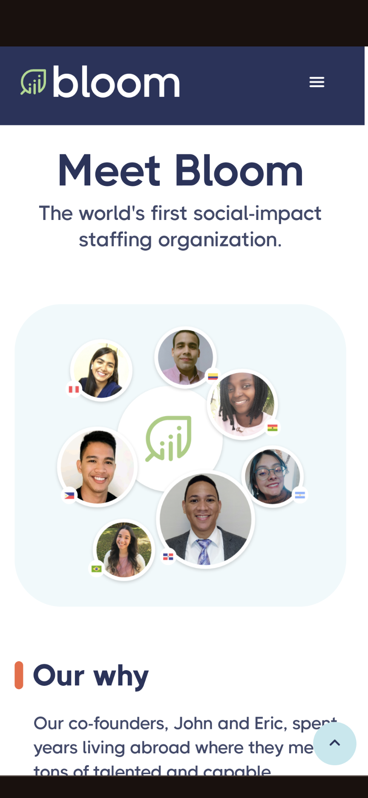
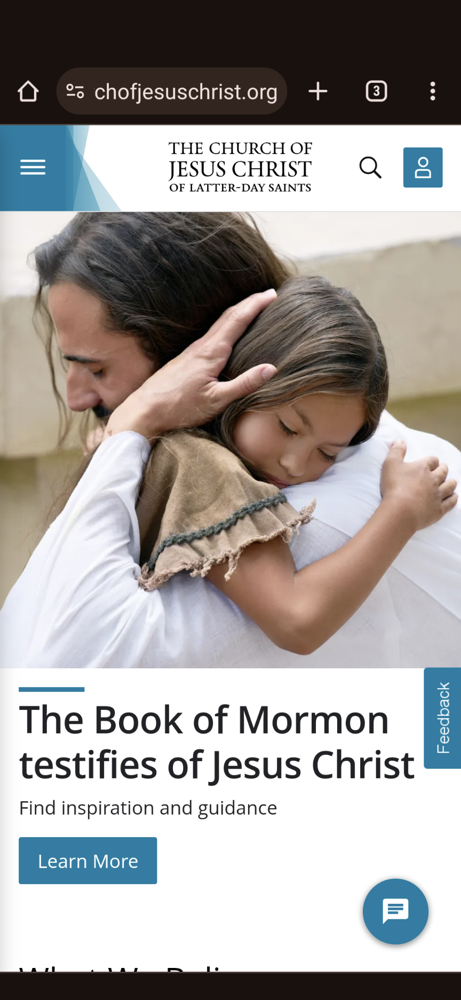

Visual Hierarchy
HireBloom
hirebloom.com Visit HireBloom website and navigate through its pages. HireBloom is known for its excellent use of visual hierarchy. Notice how they use size, color, and placement to guide your attention to key elements such as product images, headlines, and calls-to-action. Along the Pages, you will find a structured display of both images, fonts graphic that are eye catchy and visually appealing.
Proximity
Church of Jesus Christ
churchofjesuschrist.org Explore the official website of The Church of Jesus Christ of Latter-day Saints. The principle of proximity is demonstrated in how related elements are grouped together. For example, on the homepage, announcements, upcoming events, and featured messages may be placed in close proximity, creating a visual association between them. This design choice helps users quickly identify and access relevant information without unnecessary visual clutter.
Contrast
BYU-Pathway
byupathway.eduCheck out the mobile view of the BYU-Pathway homepage. Contrast is demonstrated through the use of color and typography. Notice how they use contrasting colors for buttons, making them stand out, and how bold typography creates a distinction between different sections, guiding the user's attention.